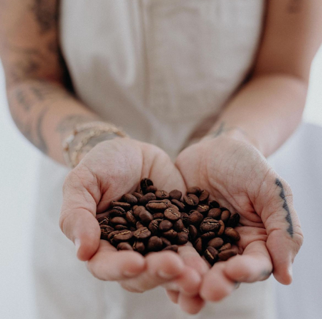
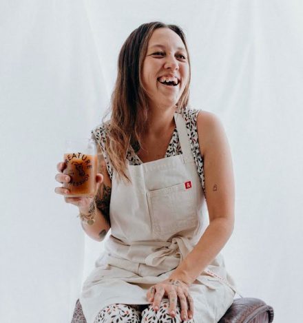
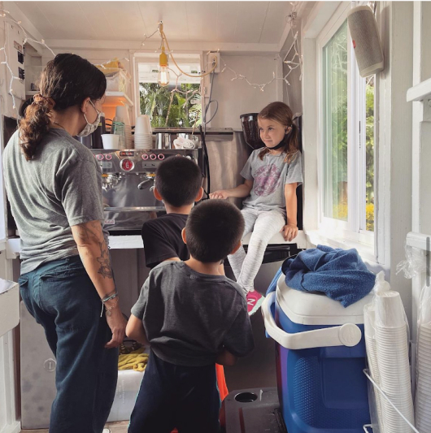

ABOUT CREATURE
"CREATURE"
in the beginning...god created mankind in his image. but “mankind” just is a fancy word for “creature.” and he also created coffee beans.
It would be a sick joke to create a creature and not let them have a coffee. Anyway, our name is a reminder that no matter what, we all just boil down to a bunch of creatures just waiting for the next time they can drink coffee. We can wait together. We love how coffee cultivates community. And community is the driving force of Creature.
"HI, I'M KELLI"
I'm a local girl who grew up on the east side of Oʻahu. I pursued fashion in college but I liked coffee more. Creature started as a cart in the back of my pickup truck that attended many farmer's markets. In 2021, Creature opened a brick-and-mortar location, where it serves coffee to the nice people of Kahaluʻu. Hope to serve you a cup of coffee one day!
OUR PHILOSPHY
community•quality•kindness
Creature is a specialty or “third wave” coffee shop that focuses on consistent quality products. We personally appreciate simple, straight forward menus, and believe it makes coffee more accessible to all creatures.